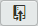

8.3.2
Pushing the local repository to the remote repository
At this point we’ve set up the link to the remote repository, but nothing else has happened we haven’t done anything with the remote repository; we haven’t even connected to it yet. We’ve just given the connection details to Brackets.
The next thing to do is send (push) the local repository up to the remote.
Make sure you are on the master branch and click the button on the Git pane: .
This opens the push to remote dialogue box:
Figure 8.16 Brackets—push to remote dialogue box
We’ve seen this screen before in section 5.4.4 with the lab-brackets-git repository. Let’s look at in a bit more detail.
The first line tells us it will create a new master branch on the remote. The is to push to this branch (this is what we want; it would be confusing to push the local master branch to a different remote branch). We also want to do a . There is no reason to do anything else.
The only thing we need to change is the tick box, tick it; we want to send our tags to the remote repository.
There is no username or password to enter, we are using SSH as the link protocol and that does not need a username and password (see § 4.3).
Click .
A couple of things happen next; first you (briefly) get a screen showing the progress of the operation:
Figure 8.17 Brackets—push to remote dialogue box, operation in progress
And after this the response screen:
Figure 8.18 Brackets—push to remote dialogue box, result
Well it looks ok, it says “successfully” so that’s good. It also says the . This just means it will report if there are changes to the remote master branch that have not been incorporated into our local repository.
Everything seems ok so close the dialogue box.
Now go back to GitHub and navigate to the lab-01-website repository (if you already have it open, refresh the page by pressing ). It looks a bit different.
Mine looks like Figure 8.19:
Figure 8.19 GitHub—lab-01-website after push
I don’t want to run through too many of the GitHub features here, I do that in section 9 and section 10; but there are somethings we need to look at. They’re all in the tab bar:
Figure 8.20 GitHub—tab bar
Starting on the left at the top. It says we have 8 commits. This is because we have only pushed the master branch and that only had eight commits on it (Figure 8.15). If you click the commits tab it lists all the commits on the branch:
Figure 8.21 GitHub—commits tab
These match the commits on the master branch workflow (exactly the same hash numbers).
Go back to the main repository screen (click the /lab-01-website at the top of the page under the black bar with the Octocat icon).
Looking at the branches tab it says there is 1 branch, this is the master branch. The local repository has two branches, but the remote repository only has one. Why?
Click the branch tab, it just shows just the single master branch.
Figure 8.22 GitHub—branches tab
Next is the releases tab  , this lists the tags we passed to the remote repository:
, this lists the tags we passed to the remote repository:
Figure 8.23 GitHub—releases tab
These are all the tags that were entered as we created the local repository.
- There is a slight discrepancy between what Brackets (and Git) call a tag and what GitHub calls a tag (you can see our tags are classed as both tags and releases in GitHub, click where it says next to the blue button), you will see the same list. Bear with it for now, I explain it more fully in § 9.6.
Finally, the contributor tab . There is only one contributor, me:
Figure 8.24 GitHub—contributor tab
The contributor page has a lot of statistics and information in it—most of it is self-explanatory and we don’t need to go through it here.
There is one final thing, go back to the repository home page and look at the coloured bar under the tabs, Figure 8.20. It’s red and purple. Click it:
Figure 8.25 GitHub—code breakdown
It shows a breakdown of the code within the repository 66% HTML, 34% CSS. HTML is shown in red; CSS in purple—other languages have other colours. Click the bar again to get back to the tabs.

{kind=link}
{kind=link}
{kind=link}
{kind=link}
{kind=link}
{kind=link}
{kind=link}
{kind=link}
{kind=link}
{kind=link}
{kind=link}
{kind=link}
{kind=link}
{kind=link}
{kind=link}
{kind=link}
{kind=link}
{kind=link}
{kind=link}
{kind=link}